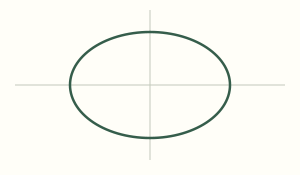
SHANGHAI MATHEMATICS · INTERACTIVE INDEX
把静止教材，变成可观察的数学
五册教材的高价值动态图索引。只选动态画面确实能替代冗长解释、呈现变化或边界的内容；简单定义与公式保留清晰静态表达。
101 阅读节点46 模块49 落点43 接入阅读节点（含复用）58 有理由跳过
动态图旁保留必要条件与结论；被替代的教材解释仍可展开，打印时恢复原文。另有 15 个混合内容段落含题设、数据或其他未被可视化的解释链，保持正文常显；旧圆锥曲线模块另有常显标准方程卡。教师版、学生版均从本地教材页面进入，学生资源与教师推导分开提供。
验证记录与边界
未提供验证 JSON；此索引只说明资源与落点，不代表数学、题答或版面已验收。
选择性必修第一册
第1章平面直角坐标系中的直线
查看本章跳过的 5 个节点及理由
- 1.1 直线的倾斜角与斜率倾斜角、斜率的基础定义不另加模块，静态图已足以承载。
- 1.2 直线的方程点斜式、一般式等直接代数关系不额外动画化。
- 1.3 两条直线的位置关系直线相交平行的简单分类可由已有坐标图解释，不增加重复模块。
- 1.4 点到直线的距离点到直线距离保留垂足简图与公式，不为直接距离计算新增交互。
- chapter-end-1 章末阅读、内容提要与复习题章末总结、历史阅读与复习题不重复插入概念实验；读者可返回对应正文章节观察。
第2章圆锥曲线
2.2 椭圆
已有资产2.3 双曲线
已有资产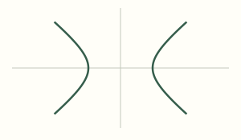
2.4 抛物线
已有资产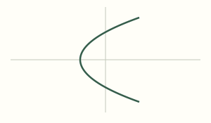
2.5 曲线与方程
已接入
查看本章跳过的 2 个节点及理由
- 2.1 圆圆的定义与标准方程较基础，现有简图足够，不为覆盖率新增演示。
- chapter-end-2 章末阅读、内容提要与复习题章末总结、历史阅读与复习题不重复插入概念实验；读者可返回对应正文章节观察。
第3章空间向量及其应用
3.2 空间向量基本定理
已接入
3.4 空间向量在立体几何中的应用
已接入
线面角：为什么与射影的夹角最小
新模块动态图的价值分开视角与数学角度，观察平面内各方向对应的真实夹角及最小值。
设直线单位方向u=(cosθ,0,sinθ)，平面内单位方向v=(cosφ,sinφ,0)。两直线夹角β取0°至90°，则cosβ=|u·v|=cosθ|cosφ|≤cosθ，故β≥θ。θ<90°时沿射影方向等号成立；θ=90°时射影为点，所有平面方向均与直线垂直。θ=0°时本模型中直线在平面内。三维图是正交投影，不保角；真实读数与右侧变化曲线均由数量积计算。必修阶段先观察与几何解释，选修阶段联系向量证明，原文及原证明不折叠。
教材位置：x1-3-4-b22。在线面角与方向向量关系后联动数量积解释，保留原文。
查看本章跳过的 3 个节点及理由
- 3.1 空间向量及其运算空间向量的定义与基础运算可迁移平面向量知识，不重复做基础运算模块。
- 3.3 空间向量的坐标表示空间点坐标、坐标运算与公式不新增低解释增益的动画。
- chapter-end-3 章末阅读、内容提要与复习题章末总结、历史阅读与复习题不重复插入概念实验；读者可返回对应正文章节观察。
第4章数列
4.1 等差数列
已接入
4.2 等比数列
已接入
4.5 用迭代序列求 √2的近似值
已接入
查看本章跳过的 3 个节点及理由
- 4.3 数列一般数列、通项与递推的基本术语不为动画而动画；高价值迭代集中在4.5。
- 4.4 数学归纳法数学归纳法重点是基例与递推的逻辑，通用多米诺动画不能替代证明，保留严谨文字。
- chapter-end-4 章末阅读、内容提要与复习题章末总结、历史阅读与复习题不重复插入概念实验；读者可返回对应正文章节观察。
必修第一册
第1章集合与逻辑
查看本章跳过的 3 个节点及理由
- 1.1 集合及其表示集合表示与简单运算保留原静态示意；仅做集合区域开关不能替代本节必要逻辑，不新增低增益动画。
- 1.2 常用逻辑用语命题与充分必要条件核心是逻辑含义和反例，不以装饰动画替代准确文字。
- chapter-end-1 章末阅读、内容提要与复习题章末总结、阅读和复习题不再追加独立交互，避免与正文重复。
第2章等式与不等式
2.3 基本不等式及其应用
已接入
查看本章跳过的 3 个节点及理由
- 2.1 等式与不等式的性质等式、不等式运算法则以条件和代数证明为主，未选纯代入型滑块。
- 2.2 不等式的求解绝对值内外侧和简单不等式的静态数轴已足够清楚；本轮严格不为太简单的知识点追加滑块。
- chapter-end-2 章末阅读、内容提要与复习题章末总结、阅读和复习题不再追加独立交互，避免与正文重复。
第3章幂、指数与对数
查看本章跳过的 3 个节点及理由
- 3.1 幂与指数指数运算规则主要是符号法则，动态图不比精炼推导更有效。
- 3.2 对数对数定义与运算法则在后续对数函数可视化中联动，本节不重复插入。
- chapter-end-3 章末阅读、内容提要与复习题章末总结、阅读和复习题不再追加独立交互，避免与正文重复。
第4章幂函数、指数函数与对数函数
4.2 指数函数
已接入
4.3 对数函数
已接入
指数和对数：交换坐标为何改变定义域
新模块动态图的价值联动同底指数、对数及交换坐标，浓缩对数正负、单调性、渐近线和性质表。
对数函数仅在 x>0 有定义，值域为全体实数，过 (1,0)，趋近 y 轴而不相交。a>1 时严格增，x>1 为正而 0<x<1 为负；0<a<1 时上述结论反向。相同底数的指数与对数交换横纵坐标，关于 y=x 对称；底数互为倒数的对数图像则关于 x 轴对称。
教材位置：bx1-4-3-b12。覆盖本节原prose第12块：联动同底指数、对数及交换坐标，浓缩对数正负、单调性、渐近线和性质表。；原文含定义、证明或表格，完整保留在可展开区，核心条件与结论在摘要/公式中常显。
查看本章跳过的 2 个节点及理由
- 4.1 幂函数常见幂函数比较用现有静态图足够；函数性质模块承担有序两点的高价值动态解释。
- chapter-end-4 章末阅读、内容提要与复习题章末总结、阅读和复习题不再追加独立交互，避免与正文重复。
第5章函数的概念、性质及应用
5.2 函数的基本性质
已接入
两点同时移动：单调性必须限定区间
新模块动态图的价值通过反例和有序两点比较区分局部点对观察与全区间单调定义。
在区间 I 内，任意 x₁<x₂ 若总有 f(x₁)≤f(x₂)，称增函数；改为≥称减函数，改为严格不等号称严格增/减。平方函数负半轴严格减、正半轴严格增；常函数同时增且减而均不严格。正半轴幂函数指数正则严格增、负则严格减；指数和对数的方向取决于底数在 1 的哪侧。拖动两点用于发现区间与反例，不替代“任意两点”的证明。
教材位置：bx1-5-2-b19。覆盖本节原prose第19块：通过反例和有序两点比较区分局部点对观察与全区间单调定义。；原文含定义、证明或表格，完整保留在可展开区，核心条件与结论在摘要/公式中常显。
5.4 反函数
已接入
反函数：保留哪一个平方根分支
新模块动态图的价值用交换坐标和定义域分支解释反函数图像的对称性及求解步骤。
反函数先以原函数值域为定义域，解出原自变量，再交换横纵坐标。点 (a,b) 与 (b,a) 关于 y=x 对称：不重合时，连线中点在 y=x 上且连线斜率为 -1。一般反函数图像因此关于 y=x 对称。平方函数须先限制为非负或非正半轴，才得到对应平方根分支；这里由同一动点看这一限制。
教材位置：bx1-5-4-b11。覆盖本节原prose第11块：用交换坐标和定义域分支解释反函数图像的对称性及求解步骤。；原文含定义、证明或表格，完整保留在可展开区，核心条件与结论在摘要/公式中常显。
查看本章跳过的 3 个节点及理由
- 5.1 函数函数定义需要唯一对应的准确条件，映射箭头的简单移动增益有限。
- 5.3 函数的应用建模须读具体情境与论证，不用通用动画替代情境条件。
- chapter-end-5 章末阅读、内容提要与复习题章末总结、阅读和复习题不再追加独立交互，避免与正文重复。
必修第二册
第6章三角
6.1 正弦、余弦、正切、余切
已接入
单位圆：带符号投影统一四种三角比
新模块动态图的价值将终边点的坐标与四种三角比联动，解释跨象限符号和不存在的比值。
将角顶点放在原点、始边放在 x 正半轴，终边任取非原点 P(x,y)，r 为到原点距离。锐角三角比推广为带符号坐标与 r 的比；取单位圆 r=1 后，横纵坐标直接成为 cos 与 sin。终边同向伸缩不改比值，转过整周也不改值；tan、cot 必须分别排除分母为零的情形。
教材位置：bx2-6-1-b25。覆盖本节原prose第25块：将终边点的坐标与四种三角比联动，解释跨象限符号和不存在的比值。；原文含定义、证明或表格，完整保留在可展开区，核心条件与结论在摘要/公式中常显。
6.3 解三角形
已接入
SSA为何不唯一：圆与射线的有效交点
新模块动态图的价值将可能的三角形个数转化为有效交点数，辨别相切、反向交点及退化解。
教师拓展，不将完整SSA分类提升为全体学生必学。固定AC=b=3及角A，令C=(3cosA,3sinA)，B=(c,0)，其中c>0。由BC=a得(c−3cosA)²+h²=a²，h=3sinA。圆与直线的候选交点还须剔除c≤0者。因此a=h虽为相切，却仅在A为锐角时产生一个有效三角形；直角时B=A退化，钝角时切点在反向延长线上。a=b时同样须剔除B=A。动态探索解释分类依据，不能以有限次拖动替代上述方程和有效性验证。
教材位置：bx2-6-3-b3。正弦定理后加入教师拓展，呈现SSA多解依据，不替换原定理推导。
查看本章跳过的 2 个节点及理由
- 6.2 常用三角公式三角恒等变换需要代数推导，单位圆模块已承担几何符号与投影，不重复动画。
- chapter-end-6 章末阅读、内容提要与复习题章末总结、阅读和复习题不再追加独立交互，避免与正文重复。
第7章三角函数
7.1 正弦函数的图像与性质
已接入
7.3 正弦型函数的图像
已接入
振幅、周期、初相：不要把 φ 误当横移量
新模块动态图的价值用一条可调曲线同时呈现振幅、周期、频率、相位及正确横移量。
振动模型中 A>0 为振幅，ω>0 为圆频率，周期 T=2π/ω，频率 f=1/T=ω/(2π)；相位为 ωx+φ，初相为 φ。A 改变纵向幅度，ω 改变周期；水平位移是 -φ/ω 而非 -φ。负 A 或负 ω 可由诱导公式化归。时钟顺时针的负角速度情境和弹簧照片保留在原文。
教材位置：bx2-7-3-b2。覆盖本节原prose第2块：用一条可调曲线同时呈现振幅、周期、频率、相位及正确横移量。；原文含定义、证明或表格，完整保留在可展开区，核心条件与结论在摘要/公式中常显。
7.4 正切函数的图像与性质
已接入
查看本章跳过的 2 个节点及理由
- 7.2 余弦函数的图像与性质余弦可视为正弦的相位变化，正弦与Aωφ模块已覆盖关键动态关系，本节避免重复。
- chapter-end-7 章末阅读、内容提要与复习题章末总结、阅读和复习题不再追加独立交互，避免与正文重复。
第8章平面向量
8.2 向量的数量积
已接入
投影先带符号，再计算数量积
新模块动态图的价值用夹角跨越90度解释投影向量、数量投影和数量积正负，减少多图叙述。
点的投影是向目标直线作垂线的垂足；向量投影由起终点的投影之差组成。以非零 a 为方向，b 的数量投影为 |b|cosθ，投影向量为这一数乘 a 的单位向量，模为数量投影的绝对值。锐角同向、钝角反向、直角为零；b=0 也投影为零但不定义夹角。数量积进一步乘 |a|，得到数量而不是向量；这也是力做功的方向分量解释。
教材位置：bx2-8-2-b4。覆盖本节原prose第4块：用夹角跨越90度解释投影向量、数量投影和数量积正负，减少多图叙述。；原文含定义、证明或表格，完整保留在可展开区，核心条件与结论在摘要/公式中常显。
查看本章跳过的 4 个节点及理由
- 8.1 向量的概念和线性运算简单向量平移和加法已有静态图说明，本轮优先更难理解的带符号投影。
- 8.3 向量的坐标表示坐标运算法则主要是直接计算，沿用公式和例题，不制作低增益代入动画。
- 8.4 向量的应用应用依具体题目情境展开，数量积投影已提供方法层的动态解释，避免泛化题解动画。
- chapter-end-8 章末阅读、内容提要与复习题章末总结、阅读和复习题不再追加独立交互，避免与正文重复。
第9章复数
9.4 复数的三角形式
已接入
查看本章跳过的 4 个节点及理由
- 9.1 复数及其四则运算复数加减和四则运算保留代数基础，后续三角形式统一承担乘除几何变换。
- 9.2 复数的几何意义基本复平面点表示不单独做滑块；复杂旋转伸缩放在9.4节，避免简单知识点动画。
- 9.3 实系数一元二次方程实系数二次方程求复根以代数公式和共轭关系为主，不用动点替代推导。
- chapter-end-9 章末阅读、内容提要与复习题章末总结、阅读和复习题不再追加独立交互，避免与正文重复。
必修第三册
第10章空间直线与平面
10.2 直线与直线的位置关系
已接入
10.3 直线与平面的位置关系
已接入

线面角：为什么与射影的夹角最小
新模块动态图的价值分开视角与数学角度，观察平面内各方向对应的真实夹角及最小值。
设直线单位方向u=(cosθ,0,sinθ)，平面内单位方向v=(cosφ,sinφ,0)。两直线夹角β取0°至90°，则cosβ=|u·v|=cosθ|cosφ|≤cosθ，故β≥θ。θ<90°时沿射影方向等号成立；θ=90°时射影为点，所有平面方向均与直线垂直。θ=0°时本模型中直线在平面内。三维图是正交投影，不保角；真实读数与右侧变化曲线均由数量积计算。必修阶段先观察与几何解释，选修阶段联系向量证明，原文及原证明不折叠。
教材位置：bx3-10-3-b26。射影与线面角定义后解释最小性，保留原定义及几何论证。
10.4 平面与平面的位置关系
已接入
10.5 异面直线间的距离
已接入查看本章跳过的 2 个节点及理由
- 10.1 平面及其基本性质点线面公理与基本记号优先保留简图和精确文字；不以动作装饰替代公理。
- chapter-end-10 章末阅读、内容提要与复习题章末总结、历史阅读与复习题不重复插入概念实验；读者可返回对应正文章节观察。
第11章简单几何体
11.1 柱体
已接入
11.2 锥体
已接入
11.3 多面体与旋转体
已接入
11.4 球
已接入
查看本章跳过的 1 个节点及理由
- chapter-end-11 章末阅读、内容提要与复习题章末总结、历史阅读与复习题不重复插入概念实验；读者可返回对应正文章节观察。
第12章概率初步
12.3 频率与概率
已接入
12.4 随机事件的独立性
已接入
查看本章跳过的 3 个节点及理由
- 12.1 随机现象与样本空间该节以直接定义、运算练习、重复总结或程序性活动为主，动态视图解释增益有限；避免为覆盖率而动画化。
- 12.2 古典概率该节以直接定义、运算练习、重复总结或程序性活动为主，动态视图解释增益有限；避免为覆盖率而动画化。
- chapter-end-12 章末阅读、内容提要与复习题该节以直接定义、运算练习、重复总结或程序性活动为主，动态视图解释增益有限；避免为覆盖率而动画化。
第13章统计
13.3 抽样方法
已接入
13.4 统计图表
已接入
13.5 统计估计
已接入
查看本章跳过的 4 个节点及理由
- 13.1 总体与样本该节以直接定义、运算练习、重复总结或程序性活动为主，动态视图解释增益有限；避免为覆盖率而动画化。
- 13.2 数据的获取该节以直接定义、运算练习、重复总结或程序性活动为主，动态视图解释增益有限；避免为覆盖率而动画化。
- 13.6 统计活动该节以直接定义、运算练习、重复总结或程序性活动为主，动态视图解释增益有限；避免为覆盖率而动画化。
- chapter-end-13 章末阅读、内容提要与复习题该节以直接定义、运算练习、重复总结或程序性活动为主，动态视图解释增益有限；避免为覆盖率而动画化。
选择性必修第二册
第5章导数及其应用
5.1 导数的概念及意义
已接入
5.3 导数的应用
已接入
根在哪里合并：含参三次方程的临界状态
新模块动态图的价值拖动水平线，解释不同实根数为什么只在极值高度发生变化，而不只是数当前屏幕上的交点。
设 f(x)=x³−3x，则 f′(x)=3(x−1)(x+1)。因此 f 在 (−∞,−1)、(1,+∞) 上严格增，在 (−1,1) 上严格减；将驻点端点并入，考虑三段 (−∞,−1]、[−1,1]、[1,+∞)。由 f(−1)=2、f(1)=−2 及两端趋势，这三段的值域依次为 (−∞,2]、[−2,2]、[−2,+∞)。当 −2<a<2 时各段各有一个交点；当 a=±2 时相邻交点合并，只剩两个不同实根；|a|>2 时仅一个实根。临界值还可直接验证：x³−3x−2=(x+1)²(x−2)，x³−3x+2=(x−1)²(x+2)，相切的根均为二重根。重数不是不同交点个数；非临界状态的数值根仅作近似显示。图中的横纵单位刻度不同，不据图估计切线角度。
教材位置：x2-5-3-b14。在极值定义后的方法深化；保留极值、驻点及原例题正文，不以探索替代论证。
查看本章跳过的 2 个节点及理由
- 5.2 导数的运算该节以直接定义、运算练习、重复总结或程序性活动为主，动态视图解释增益有限；避免为覆盖率而动画化。
- chapter-end-5 章末阅读、内容提要与复习题该节以直接定义、运算练习、重复总结或程序性活动为主，动态视图解释增益有限；避免为覆盖率而动画化。
第6章计数原理
6.3 组合
已接入
为什么能除以重复次数：从有序过程到最终结果
新模块动态图的价值选择一个最终结果，反查它对应的全部有序过程；比较统一重复与不统一重复，判断何时可以整体相除。
场景一：从1至6六个不同元素中依次等可能地不放回取两个，共6×5=30个有序结果。忽略顺序后，每组{i,j}（i≠j）恰对应(i,j)、(j,i)，故共30÷2=15组。场景二：两枚可区分的公平骰子独立投掷，36个有序结果等可能；忽略顺序后，同点数组各有1个来源，异点数组各有2个来源，共6+15=21组。因此不能统一用36÷2计数，更不能把21个无序结果视为等可能：同点数组概率1/36，异点数组概率2/36。这里统一相除的依据是每个最终结果被计次数相同。选取重复项在不放回场景中无效，界面诚实保留该选择并标明结果不存在。
教材位置：x2-6-3-b10。在排列与组合对应表后深化重复计数的条件，原公式推导和例题保持可见。
6.5 二项式定理
已接入
查看本章跳过的 4 个节点及理由
- 6.1 乘法原理与加法原理该节以直接定义、运算练习、重复总结或程序性活动为主，动态视图解释增益有限；避免为覆盖率而动画化。
- 6.2 排列该节以直接定义、运算练习、重复总结或程序性活动为主，动态视图解释增益有限；避免为覆盖率而动画化。
- 6.4 计数原理在古典概率中的应用该节以直接定义、运算练习、重复总结或程序性活动为主，动态视图解释增益有限；避免为覆盖率而动画化。
- chapter-end-6 章末阅读、内容提要与复习题该节以直接定义、运算练习、重复总结或程序性活动为主，动态视图解释增益有限；避免为覆盖率而动画化。
第7章概率初步(续)
7.1 条件概率与相关公式
已接入
检出率不变，阳性者的判断为什么会变
新模块动态图的价值用10000人的期望频数追踪真正的分母，区分检出率与阳性者中实际患病的概率。
教师选学拓展。记 D 为患病，+ 为阳性，患病率为 p，模型检出率为 s，模型误报率为 q。10000人模型中，真阳性期望数为10000ps，假阳性为10000(1−p)q。只看阳性者时，分母为两者之和；因此在 ps+(1−p)q>0 时，P(D|+)=ps/[ps+(1−p)q]。这由条件概率和全概率公式得到，不是把P(+|D)直接倒过来。P(+|D)=s 还要求 p>0；p=0时该条件概率未定义，s仅保留为模型参数；p=1时误报率的条件群体同样为空。频数全部为模型期望数，可能不是整数，非一次实测人数。树形框与连线不按人数比例，底部阳性构成条按真实比例绘制；结论不依赖画面面积的猜测。
教材位置：x2-7-1-b23。衔接逆向条件的教材段落与选学贝叶斯公式；保留原文，明确教师拓展属性。
7.2 随机变量的分布与特征
已接入
7.3 常用分布
已接入
查看本章跳过的 1 个节点及理由
- chapter-end-7 章末阅读、内容提要与复习题该节以直接定义、运算练习、重复总结或程序性活动为主，动态视图解释增益有限；避免为覆盖率而动画化。
第8章成对数据的统计分析
8.2 一元线性回归分析
已接入
8.3 2×2 列联表
已接入
查看本章跳过的 2 个节点及理由
- 8.1 成对数据的相关分析该节以直接定义、运算练习、重复总结或程序性活动为主，动态视图解释增益有限；避免为覆盖率而动画化。
- chapter-end-8 章末阅读、内容提要与复习题该节以直接定义、运算练习、重复总结或程序性活动为主，动态视图解释增益有限；避免为覆盖率而动画化。